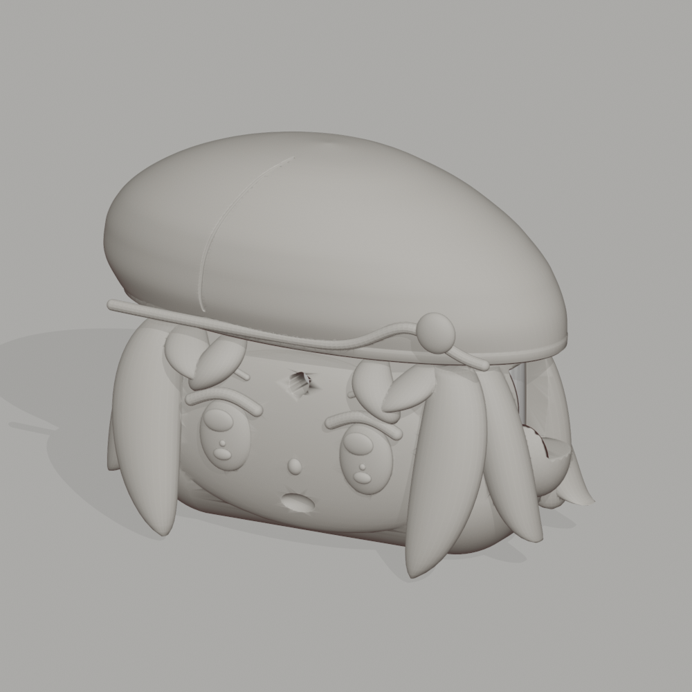
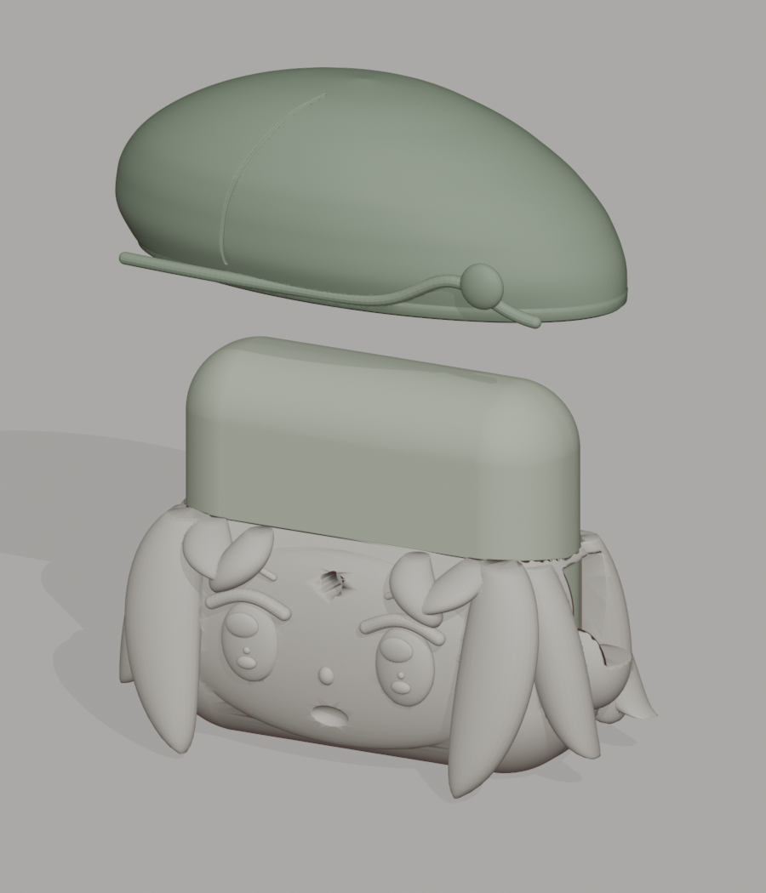
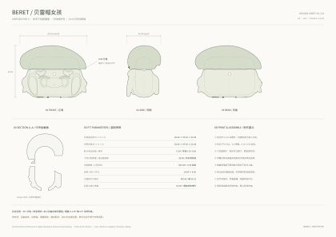

摘帽，也可以只是开盖。
帽子是单独打印的上半壳，固定于原充电盒上盖，沿原有铰链转动。两件外壳之间没有额外的跨缝卡扣。
一顶贝雷帽，一个小小的陪伴。
让三视图里的女孩，成为每天随身的耳机壳。
独立帽盖 · 浮雕五官 · 分层发梢
参考三视图重建 / 首版试配模型 V1.0

01 — BERET GIRL从充电盒出发调整比例，让帽檐成为自然的分割线。
外观按参考重建，功能尺寸独立控制。

帽子是单独打印的上半壳，固定于原充电盒上盖，沿原有铰链转动。两件外壳之间没有额外的跨缝卡扣。
大眼睛、发束、帽檐与圆扣都做成实体浮雕。发梢加厚并钝化，减少打印时的细尖与悬空薄片。
预留充电、扬声器、指示灯和挂绳区开口。后侧切出开盖空间，默认建议拆壳进行无线充电。
先试配，再完整打印。官方尺寸用于建立包络；内腔圆角、分缝高度和铰链轴为工程近似。需用实物确认帽盖固定、开盖行程、触控配对与各开口位置。

图中外形投影来自交付 STL。尺寸单位 mm；显示颜色仅作配色探索。当前版本为待实物试配的打印原型。
模型、尺寸图、参数源文件与展示网页，
已经放进同一份制作包。
建议起点 TPU 95A / 0.16–0.20 mm 层高 / 0.4 mm 喷嘴。先用试配环校准，再打印完整壳；帽盖可用薄型可移除胶片固定。详细姿态、支撑与装配步骤见 制作说明。